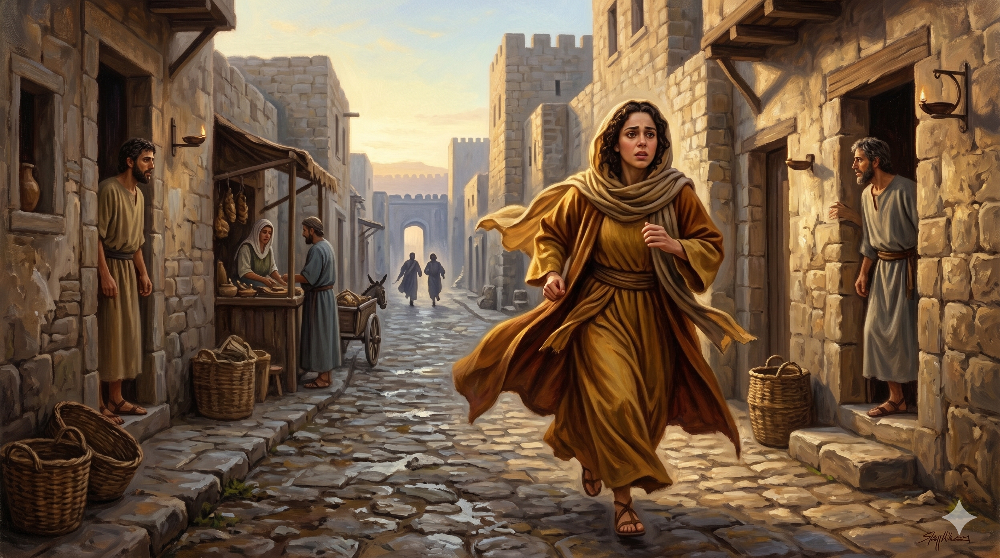

아직 어두운 새벽, 무덤 입구 앞에 홀로 서 있는 막달라 마리아 — 돌이 옮겨진 빈 무덤 앞에서 혼란과 슬픔이 교차하는 그 아침의 고요
"안식 후 첫날 이른 아침 아직 어두울 때에 막달라 마리아가 무덤에 와서 돌이 무덤에서 옮겨진 것을 보고 시몬 베드로와 예수께서 사랑하시던 그 다른 제자에게 달려가서 말하되 사람들이 주님을 무덤에서 가져다가 어디 두었는지 우리가 알지 못하겠다 하니" — 요한복음 20:1-2
요한은 그날의 시간을 정밀하게 기록합니다. "아직 어두울 때에." 막달라 마리아는 날이 채 밝기도 전에 무덤을 향해 나섰습니다. 그것은 의무가 아니었습니다. 사랑이 그녀를 이른 새벽의 어둠 속으로 이끌었습니다. 그런데 무덤에 도착했을 때, 그녀는 예상치 못한 광경을 마주합니다. 무덤 문을 막고 있던 그 크고 무거운 돌이 이미 옮겨져 있었습니다. 로마 병사들의 경비와 봉인된 돌 — 그 모든 것이 사라지고, 무덤은 열려 있었습니다. 부활의 아침은 이렇게, 혼란과 의문 속에서 시작되었습니다.
마리아는 즉시 베드로와 요한에게 달려갑니다. "사람들이 주님을 무덤에서 가져다가 어디 두었는지 알지 못하겠다." 그녀의 첫 반응은 부활을 깨달은 기쁨이 아니었습니다. 도굴이나 시신 이동을 의심하는 혼란이었습니다. 그러나 이것이 오히려 이 증언의 진실성을 보여줍니다. 막달라 마리아는 만들어진 이야기를 전한 것이 아닙니다. 그녀는 자신이 보고 느낀 그대로 — 당혹스럽고 두려운 그대로 — 달려갔습니다. 하나님의 일은 종종 우리의 이해보다 먼저 일어납니다. 깨달음은 나중에 옵니다.

빈 무덤의 소식을 전하기 위해 전력으로 달려가는 마리아 — 그 달음질은 혼란이었지만, 하나님은 그 달음질로 부활의 첫 소식을 세상에 전하셨다
막달라 마리아는 이른 새벽 어둠 속에서도 주님을 찾아 나섰습니다. 삶이 혼란스럽고 앞이 보이지 않을 때에도, 우리가 주님을 향해 발걸음을 내딛는 것은 가장 중요한 일입니다. 마리아는 빈 무덤 앞에서 아무것도 이해하지 못했습니다. 그러나 그녀가 이해하든 못하든, 부활은 이미 일어나 있었습니다. 우리가 하나님의 일을 이해하지 못하는 순간에도, 하나님은 이미 일하고 계십니다. 이해가 없어도 그분을 향해 나아가는 것 — 그것이 믿음입니다.
마리아는 혼란 속에서도 혼자 앉아 있지 않았습니다. 그녀는 달려갔습니다. 공동체 안으로, 사람들에게로 달려갔습니다. 믿음의 혼란은 혼자 끌어안는 것이 아닙니다. 함께 나누고, 함께 확인하고, 함께 진리를 향해 나아가는 것입니다. 오늘 당신의 삶에 이해되지 않는 빈 무덤이 있습니까? 혼자 서서 막막해하지 말고, 함께할 사람에게 달려가십시오. 진리는 함께 걸어갈 때 더 선명해집니다.
마리아는 이해하지 못했습니다. 그러나 달려갔습니다.
하나님의 일은 우리의 이해보다 항상 먼저 일어납니다.
깨닫기 전에 먼저 나아가는 것, 그것이 사랑의 믿음입니다.